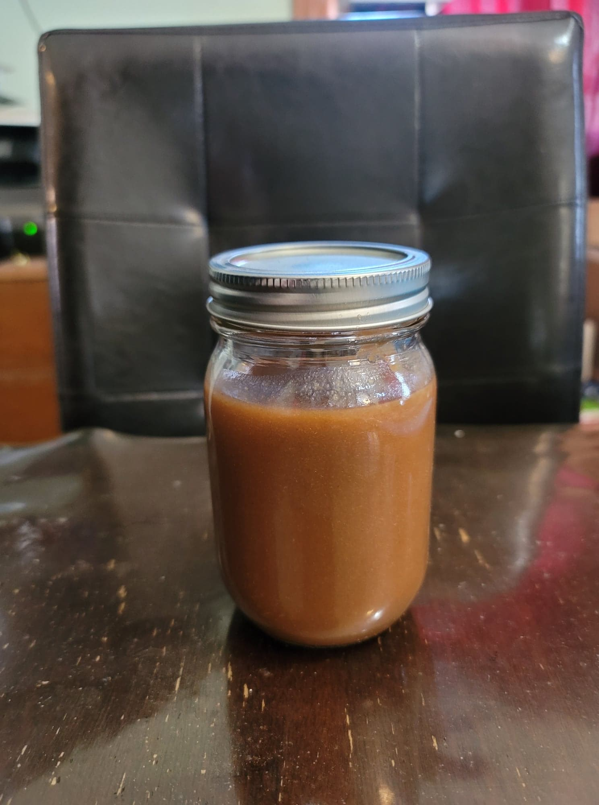

Sesame Ginger Tofu Poke Bowl

Ingredients:
- 1 cup Tamarind
- 1 1/2 Hot/Warm water
Instructions:
- Clean the tamarind. Add to the water and let rest for 15 minutes.
- Mash the tamarind in the water. Let rest another 15 minutes and then mash a final time.
- Strain the mixture to a strainer and reserve the liquid. Store in a fridge for about a month.